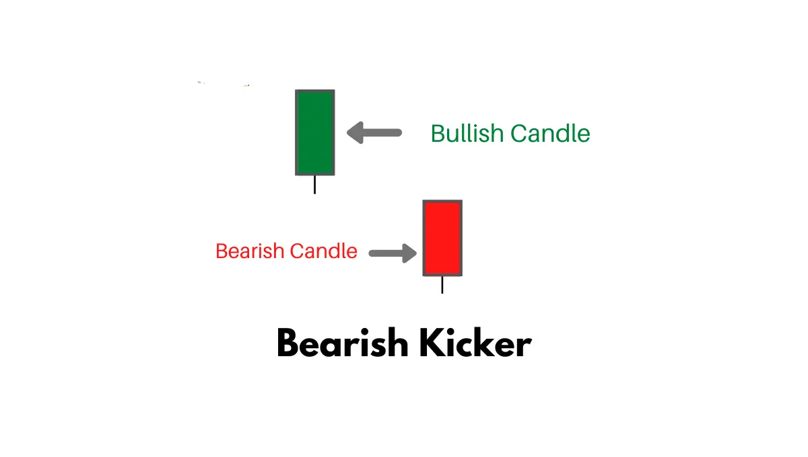
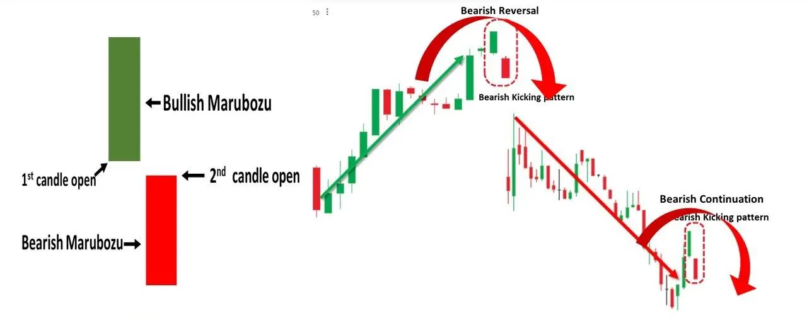

A bearish kicker is a candlestick pattern that consists of two candles, and that’s believed to signal a coming swing to the downside.

A bearish kicker can be formed in an uptrend or downtrend and is made up of a bearish candle that’s preceded by a gap to the downside and a bullish candle.
| How to Identify a Bearish Kicker Candlestick Pattern |
A bearish kicker can develop despite the trend direction and is a strong bearish signal. Here is how you can identify a bearish kicker candlestick pattern.
| How to trade using a Bearish Kicker Candlestick Pattern |
When a trader identifies a Bearish Kicker pattern on a particular stock chart, you can enter into the trade in the next candle after the Bearish Kicker pattern emerges. The stop loss should be placed at the high of the previous candle.
| Bullish & Bearish Kicker criteria |
